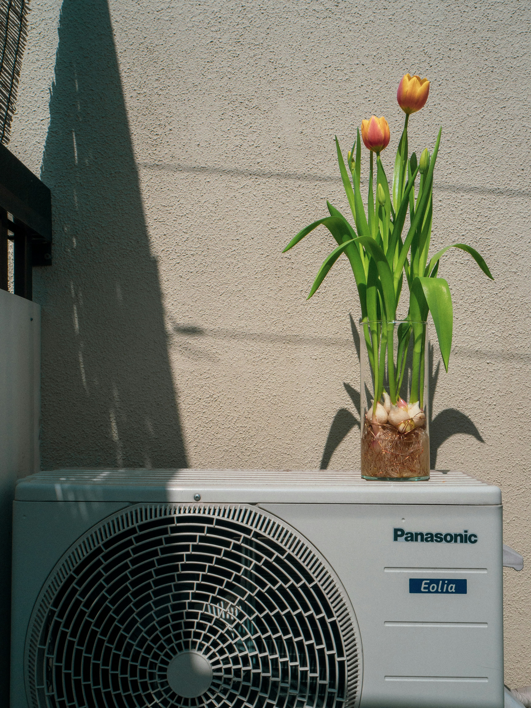
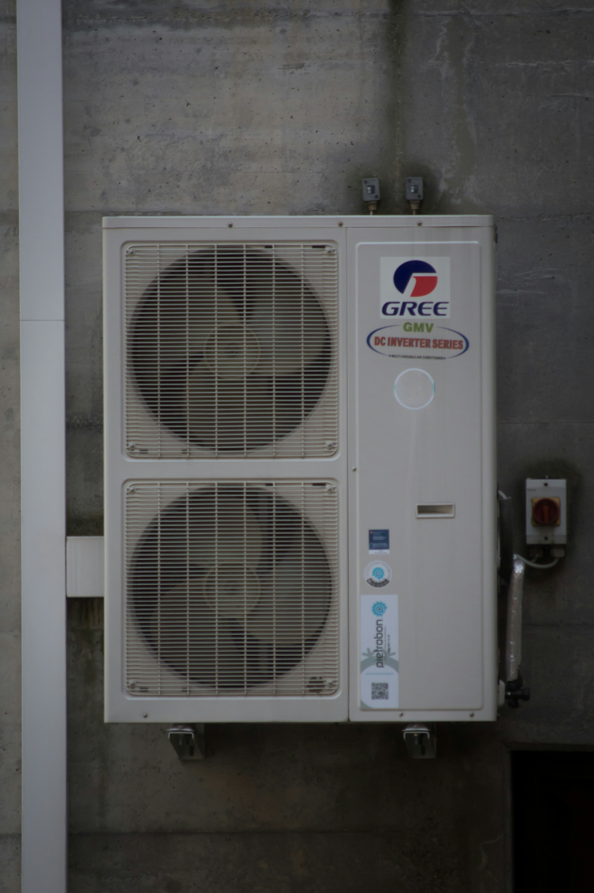
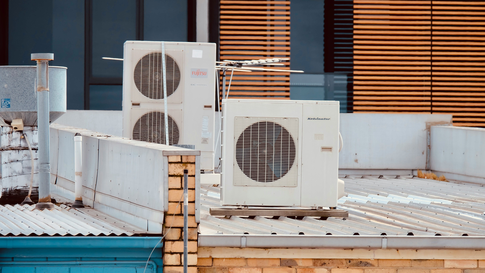

Ghid complet pentru verificarea și repararea traseului frigorific al aerului condiționat. Învață cum să identifici și să rezolvi problemele cu sistemul de răcire.
Traseul frigorific reprezintă sistemul de conducte prin care circulă freonul (agentul frigorific) între unitatea interioară și cea exterioară a aerului condiționat. Acest sistem este esențial pentru funcționarea corectă a aparatului.
Vizualizează componentele și procedurile pentru matisarea traseului frigorific

Sistemul de conducte frigorifice pentru transferul eficient al căldurii.

Componentele esențiale pentru funcționarea optimă a traseului frigorific.

Instalația tehnică profesională pentru sistemul de climatizare.
Contactează-ne pentru asistență tehnică specializată
0765 289 421
info@erori-aer-conditionat.ro
Luni-Vineri: 8:00-18:00
Servicii de reparații și mentenanță
Specializat în matisarea traseului frigorific